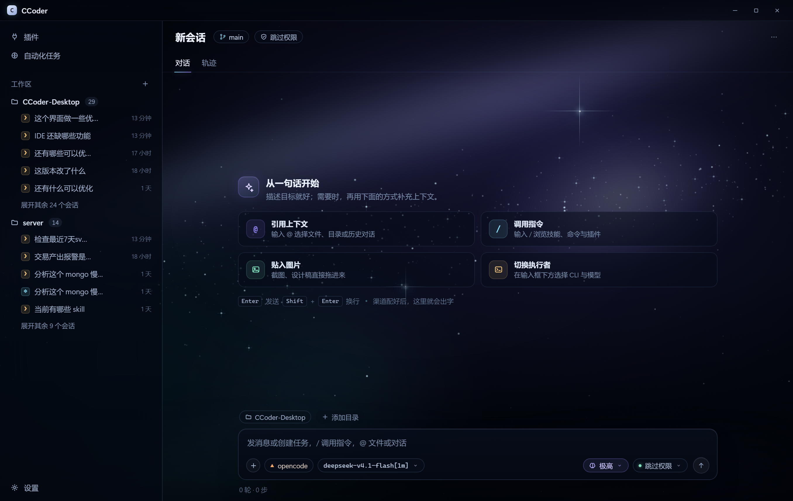
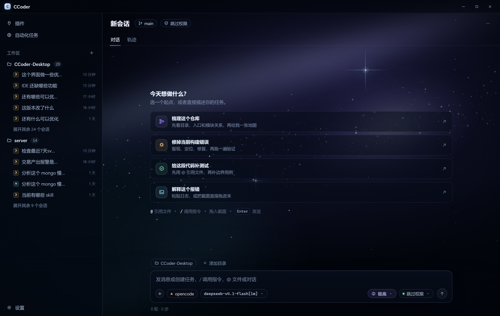
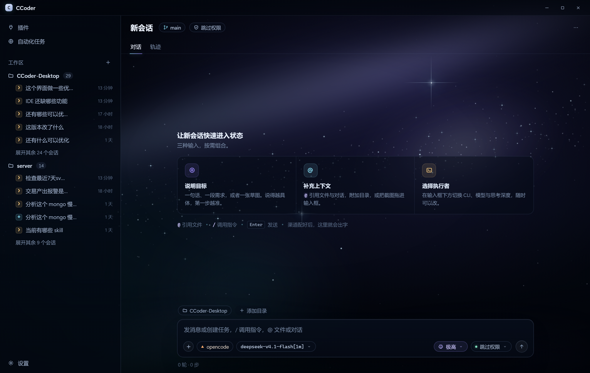
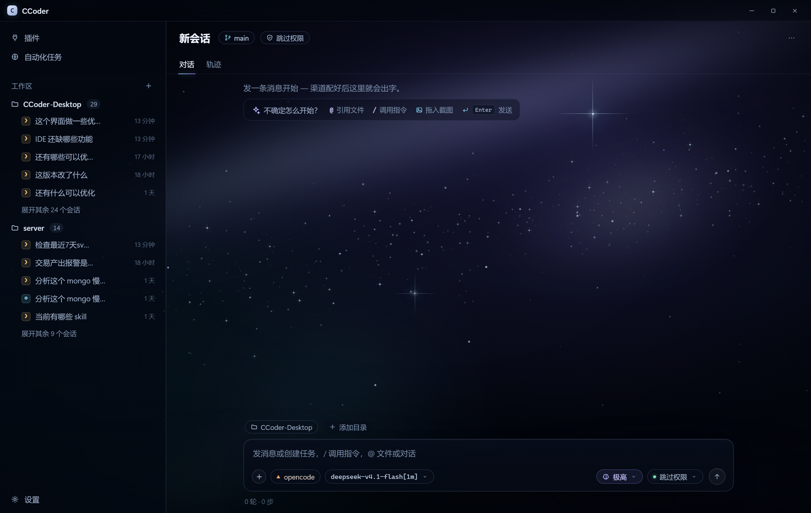

上手卡片
把 @、指令、图片和执行者一次讲清，信息最全，适合首次使用。

建议任务
用四个真实任务当起点，点一下就能带着上下文开工。

能力说明
按“目标 / 上下文 / 执行者”三栏解释产品，更像一张使用地图。

轻提示
只留一条快捷键提示，最安静；背景和输入框仍是主角。
背景统一用 A · 银河带，先只看内容层的密度与层级。打开 mockup 可以自由组合四种天空和四种空态。

把 @、指令、图片和执行者一次讲清，信息最全，适合首次使用。

用四个真实任务当起点，点一下就能带着上下文开工。

按“目标 / 上下文 / 执行者”三栏解释产品，更像一张使用地图。

只留一条快捷键提示，最安静；背景和输入框仍是主角。